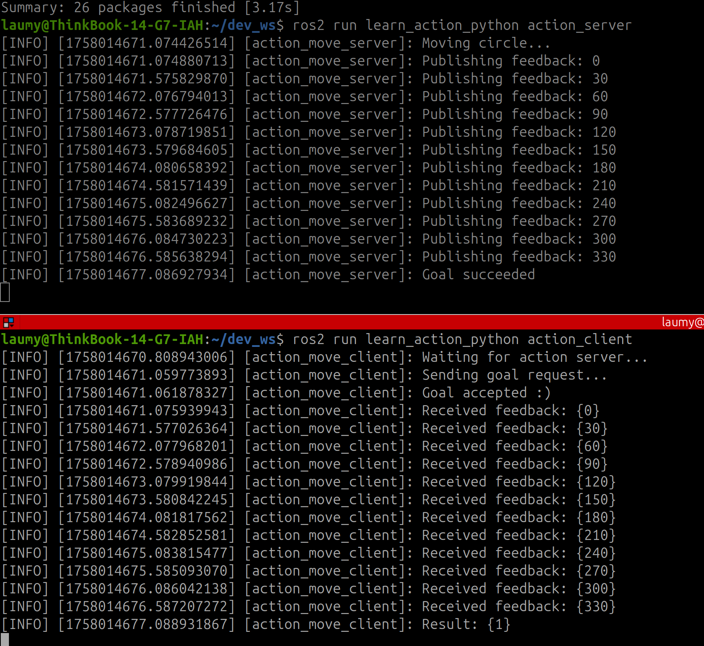

简介
{kind=link}
在ROS系统每个节点可以理解为一个进程，更准确的说法它是一个包含了特定功能的独立执行单元。节点在ROS2中通常是一个可执行文件，负责执行特定的任务，如控制机器人、传感器数据处理等。每个节点可以通过ROS2的通信机制与其他节点进行数据交换。
在具体的工程应用中，需要多个节点进行配合完成一个具体的产品。那么多个节点直接如何进行通信了，ROS系统提供了话题、服务、动作这几种方式，当然除了上面3中之外还有一种参数的方式，这种方式是一种共享的全局变量，让各个节点可以进行查询/设置参数以达到信息传输的目的。
话题

搞过网络MQTT的对ROS2中的话题通信理解就简单了，可以说ROS2中的话题通信与MQTT是一模一样的。话题通信分为发布者和订阅者。发布者通过话题（topic）发布消息，订阅者通过订阅该话题后可接受到该消息。话题的通信是异步通信的方式，结构上是多对多的关系。
python示例
先创建一个包
cd ~/dev_ws/src/
ros2 pkg create --build-type ament_python learning_topic_python
创建一个发布者节点程序topic_hello_pub.py
import rclpy
from rclpy.node import Node
from std_msgs.msg import String
class PublisherNode(Node):
def __init__(self, name):
super().__init__(name)
self.pub = self.create_publisher(String, "hello", 10)
self.timer = self.create_timer(1.0, self.publish_message)
def publish_message(self):
msg = String()
msg.data = "Hello, ROS2!"
self.pub.publish(msg)
self.get_logger().info("Published: %s" % msg.data)
def main(args=None):
rclpy.init(args=args)
node = PublisherNode("publisher_node")
rclpy.spin(node)
node.destroy_node()
rclpy.shutdown()
创建订阅者节点程序topic_hello_sub.py
import rclpy
from rclpy.node import Node
from std_msgs.msg import String
class SubscriberNode(Node):
def __init__(self, name):
super().__init__(name)
self.sub = self.create_subscription(String, "hello", self.callback, 10)
def callback(self, msg):
self.get_logger().info("Received: %s" % msg.data)
def main(args=None):
rclpy.init(args=args)
node = SubscriberNode("subscriber_node")
rclpy.spin(node)
node.destroy_node()
rclpy.shutdown()
程序运行发布者
ros2 run learning_topic_python topic_hello_pub
程序运行订阅者
ros2 run learning_topic_python topic_hello_sub
{kind=link}
核心点就是发布调用self.create_publisher，订阅调用self.create_subscription。
C++示例
创建一个包
ros2 pkg create --build-type ament_cmake learn_topic_cpp
编写发布者节点
#include <chrono>
#include <functional>
#include <memory>
#include <string>
#include "rclcpp/rclcpp.hpp"
#include "std_msgs/msg/string.hpp"
using namespace std::chrono_literals;
class PublisherNode : public rclcpp::Node
{
public:
PublisherNode()
: Node("topic_hello")
{
publisher_ = this->create_publisher<std_msgs::msg::String>("hello", 10);
timer_ = this->create_wall_timer(1s, std::bind(&PublisherNode::timer_callback, this));
}
private:
void timer_callback()
{
auto msg = std_msgs::msg::String();
msg.data = "Hello, ROS2!";
publisher_->publish(msg);
RCLCPP_INFO(this->get_logger(), "Published: %s", msg.data.c_str());
}
rclcpp::TimerBase::SharedPtr timer_;
rclcpp::Publisher<std_msgs::msg::String>::SharedPtr publisher_;
};
int main(int argc, char * argv[])
{
rclcpp::init(argc, argv);
rclcpp::spin(std::make_shared<PublisherNode>());
rclcpp::shutdown();
return 0;
}
编写订阅者节点
#include <memory>
#include "rclcpp/rclcpp.hpp"
#include "std_msgs/msg/string.hpp"
using namespace std::chrono_literals;
using std::placeholders::_1;
class SubscriberNode : public rclcpp::Node
{
public:
SubscriberNode()
: Node("topic_hello")
{
subscription_ = this->create_subscription<std_msgs::msg::String>("hello", 10, std::bind(&SubscriberNode::topic_callback, this, _1));
RCLCPP_INFO(this->get_logger(), "SubscriberNode initialized");
}
private:
void topic_callback(const std_msgs::msg::String::SharedPtr msg) const
{
RCLCPP_INFO(this->get_logger(), "I heard: '%s'", msg->data.c_str());
}
rclcpp::Subscription<std_msgs::msg::String>::SharedPtr subscription_;
};
int main(int argc, char * argv[])
{
rclcpp::init(argc, argv);
rclcpp::spin(std::make_shared<SubscriberNode>());
rclcpp::shutdown();
return 0;
}
运行测试
{kind=link}
到这里话题的python和cpp示例都实践了，话题主要使用的是异步的方式。
服务

在 ROS 2 中，服务（Service）通信是一种 请求-响应模式，允许客户端发送请求到服务端，服务端处理请求并返回响应。这种方式通常用于需要同步交互的情况，如远程调用、控制请求或计算任务等。这种通信方式与HTTP的通信方式类似，只有一个服务器，由客户端发起get，然后服务端响应数据。
python示例
创建一个包
ros2 pkg create --build-type ament_python learn_srv_python
创建一个add_server.py节点
import sys
import rclpy
from rclpy.node import Node
from learning_interface.srv import AddTwoInts
class adderServer(Node):
def __init__(self, name):
super().__init__(name)
self.srv = self.create_service(AddTwoInts, 'add_two_int', self.adder_callback)
def adder_callback(self, request, response):
response.sum = request.a + request.b
self.get_logger().info('Incoming request\na: %d b: %d' % (request.a, request.b))
return response
def main(args=None):
rclpy.init(args=args)
node = adderServer("Service_adder_server")
rclpy.spin(node)
rclpy.shutdown()
再创建一个add_client.py节点
from socket import timeout
import sys
import rclpy
from rclpy.node import Node
from learning_interface.srv import AddTwoInts
class adderClient(Node):
def __init__(self, name):
super().__init__(name)
self.client = self.create_client(AddTwoInts, 'add_two_int')
while not self.client.wait_for_service(timeout_sec=1.0):
self.get_logger().info('server not available, waiting again...')
self.request = AddTwoInts.Request()
def send_request(self):
self.request.a = int(sys.argv[1])
self.request.b = int(sys.argv[2])
self.future = self.client.call_async(self.request)
def main(args=None):
rclpy.init(args=args)
node = adderClient("Service_adder_client")
node.send_request()
while rclpy.ok():
rclpy.spin_once(node)
if node.future.done():
try:
response = node.future.result()
except Exception as e:
node.get_logger().info(
'Service call failed %r' %(e,))
else:
node.get_logger().info(
'Result of add_two_ints: for %d + %d = %d' %
(node.request.a, node.request.b, response.sum))
break
node.destroy_node()
rclpy.shutdown()
运行结果如下

示例演示了客户端请求两个数给服务器计算求和，服务器收到客户端的数据后，计算后返回结果。
在创建client和server的时候，要能够匹配上需要有共同的地址如create_service参数为"add_two_int"和create_client的参数地址一样。在服务端需要注册一个回调函数adder_callback，当收到客户端的数据时调用回调函数返回结果。
C++示例
创建一个C++的包
ros2 pkg create --build-type ament_cmake learn_srv_cpp
创建add_server.cpp节点代码
#include "rclcpp/rclcpp.hpp"
#include "learning_interface/srv/add_two_ints.hpp"
#include <memory>
void adderServer(const std::shared_ptr<learning_interface::srv::AddTwoInts::Request> request,
std::shared_ptr<learning_interface::srv::AddTwoInts::Response> response)
{
response->sum = request->a + request->b;
RCLCPP_INFO(rclcpp::get_logger("rclcpp"), "Incoming request\na: %ld b: %ld", request->a, request->b);
RCLCPP_INFO(rclcpp::get_logger("rclcpp"), "sending back response: [%ld]", response->sum);
}
int main(int argc, char **argv)
{
rclcpp::init(argc, argv);
std::shared_ptr<rclcpp::Node> node = rclcpp::Node::make_shared("service_adder_server");
rclcpp::Service<learning_interface::srv::AddTwoInts>::SharedPtr service =
node->create_service<learning_interface::srv::AddTwoInts>("add_two_int", &adderServer);
RCLCPP_INFO(rclcpp::get_logger("rclcpp"), "Ready to add two ints.");
rclcpp::spin(node);
rclcpp::shutdown();
}
创建一个add_client.cpp节点代码
#include "rclcpp/rclcpp.hpp"
#include "learning_interface/srv/add_two_ints.hpp"
#include <memory>
#include <chrono>
#include <cstdlib>
using namespace std::chrono_literals;
int main(int argc, char **argv)
{
rclcpp::init(argc, argv);
if (argc != 3) {
RCLCPP_INFO(rclcpp::get_logger("rclcpp"), "usage: service_adder_client X Y");
return 1;
}
std::shared_ptr<rclcpp::Node> node = rclcpp::Node::make_shared("service_adder_client");
rclcpp::Client<learning_interface::srv::AddTwoInts>::SharedPtr client =
node->create_client<learning_interface::srv::AddTwoInts>("add_two_int");
auto request = std::make_shared<learning_interface::srv::AddTwoInts::Request>();
request->a = atoll(argv[1]);
request->b = atoll(argv[2]);
while (!client->wait_for_service(1s)) {
if (!rclcpp::ok()) {
RCLCPP_ERROR(rclcpp::get_logger("rclcpp"), "Interrupted while waiting for the service. Exiting.");
return 0;
}
RCLCPP_INFO(rclcpp::get_logger("rclcpp"), "service not available, waiting again...");
}
auto result = client->async_send_request(request);
// Wait for the result
if (rclcpp::spin_until_future_complete(node, result) == rclcpp::FutureReturnCode::SUCCESS)
{
RCLCPP_INFO(rclcpp::get_logger("rclcpp"), "Result of add_two_ints: for %ld + %ld = %ld", request->a, request->b, result.get()->sum);
} else {
RCLCPP_ERROR(rclcpp::get_logger("rclcpp"), "Failed to call service add_two_ints");
}
rclcpp::shutdown();
return 0;
}
结果运行如下：
{kind=link}
总结一下服务的通信方式可以理解为跟http的类似，基于请求和响应的方式进行，只有一个服务器，但是可以有多个客户端是一个一对多的通信结构。数据的通信跟话题相比其是同步传输，而话题是异步传输。
动作

ROS 2 的 Action 是一种用于实现异步、长时间运行的任务的通信机制，常用于那些需要反馈或结果的任务。相比 ROS 2 的 Service（同步请求-响应模式），Action 允许客户端请求任务并在任务执行过程中接收反馈，最终获取任务的结果。它通常适用于需要较长时间处理的任务，如机器人运动控制、路径规划、抓取任务等。
具体的通信流程如下：
{kind=link}
可以分为3个阶段
- 阶段1：客户端异步的方式发送目标。
- 阶段2：服务端定期反馈实时结果。
- 阶段3：服务端反馈最终的结果。
python示例
创建一个包
ros2 pkg create --build-type ament_python learn_action_python
创建一个服务端节点程序action_server.py
import time
import rclpy # ROS2 Python接口库
from rclpy.node import Node # ROS2 节点类
from rclpy.action import ActionServer # ROS2 动作服务器类
from learning_interface.action import MoveCircle # 自定义的圆周运动接口
class MoveCircleActionServer(Node):
def __init__(self, name):
super().__init__(name) # ROS2节点父类初始化
self._action_server = ActionServer( # 创建动作服务器（接口类型、动作名、回调函数）
self,
MoveCircle,
'move_circle',
self.execute_callback)
def execute_callback(self, goal_handle): # 执行收到动作目标之后的处理函数
self.get_logger().info('Moving circle...')
feedback_msg = MoveCircle.Feedback() # 创建一个动作反馈信息的消息
for i in range(0, 360, 30): # 从0到360度，执行圆周运动，并周期反馈信息
feedback_msg.state = i # 创建反馈信息，表示当前执行到的角度
self.get_logger().info('Publishing feedback: %d' % feedback_msg.state)
goal_handle.publish_feedback(feedback_msg) # 发布反馈信息
time.sleep(0.5)
self.get_logger().info('Goal succeeded')
goal_handle.succeed() # 动作执行成功
result = MoveCircle.Result() # 创建结果消息
result.finish = True
return result # 反馈最终动作执行的结果
def main(args=None): # ROS2节点主入口main函数
rclpy.init(args=args) # ROS2 Python接口初始化
node = MoveCircleActionServer("action_move_server") # 创建ROS2节点对象并进行初始化
rclpy.spin(node) # 循环等待ROS2退出
node.destroy_node() # 销毁节点对象
rclpy.shutdown() # 关闭ROS2 Python接口
创建一个客户端阶段程序action_client.py
import rclpy # ROS2 Python接口库
from rclpy.node import Node # ROS2 节点类
from rclpy.action import ActionClient # ROS2 动作客户端类
from learning_interface.action import MoveCircle # 自定义的圆周运动接口
class MoveCircleActionClient(Node):
def __init__(self, name):
super().__init__(name) # ROS2节点父类初始化
self._action_client = ActionClient( # 创建动作客户端（接口类型、动作名）
self, MoveCircle, 'move_circle')
def send_goal(self, enable): # 创建一个发送动作目标的函数
self.get_logger().info('Waiting for action server...')
self._action_client.wait_for_server() # 等待动作的服务器端启动
goal_msg = MoveCircle.Goal() # 创建一个动作目标的消息
goal_msg.enable = enable # 设置动作目标为使能，希望机器人开始运动
self.get_logger().info('Sending goal request...')
self._send_goal_future = self._action_client.send_goal_async( # 异步方式发送动作的目标
goal_msg, # 动作目标
feedback_callback=self.feedback_callback) # 处理周期反馈消息的回调函数
self._send_goal_future.add_done_callback(self.goal_response_callback) # 设置一个服务器收到目标之后反馈时的回调函数
def goal_response_callback(self, future): # 创建一个服务器收到目标之后反馈时的回调函数
goal_handle = future.result() # 接收动作的结果
if not goal_handle.accepted: # 如果动作被拒绝执行
self.get_logger().info('Goal rejected :(')
return
self.get_logger().info('Goal accepted :)') # 动作被顺利执行
self._get_result_future = goal_handle.get_result_async() # 异步获取动作最终执行的结果反馈
self._get_result_future.add_done_callback(self.get_result_callback) # 设置一个收到最终结果的回调函数
def get_result_callback(self, future): # 创建一个收到最终结果的回调函数
result = future.result().result # 读取动作执行的结果
self.get_logger().info('Result: {%d}' % result.finish) # 日志输出执行结果
def feedback_callback(self, feedback_msg): # 创建处理周期反馈消息的回调函数
feedback = feedback_msg.feedback # 读取反馈的数据
self.get_logger().info('Received feedback: {%d}' % feedback.state)
def main(args=None): # ROS2节点主入口main函数
rclpy.init(args=args) # ROS2 Python接口初始化
node = MoveCircleActionClient("action_move_client") # 创建ROS2节点对象并进行初始化
node.send_goal(True) # 发送动作目标
rclpy.spin(node) # 循环等待ROS2退出
node.destroy_node() # 销毁节点对象
rclpy.shutdown() # 关闭ROS2 Python接口
运行 
{kind=link}
总结一下流程：
客户端 服务端
| |
|-- 发送目标 ----------->|
| |-- execute_callback() 被调用
| | (开始执行动作)
| |
|<-- 目标接受/拒绝 ------|-- 立即响应目标请求
| |
|-- goal_response_callback 被调用
| |
| |-- 开始循环执行
| | (0°, 30°, 60°...)
| |
|<-- 反馈消息 ----------|-- publish_feedback(0°)
| |
|-- feedback_callback 被调用
| |
|<-- 反馈消息 ----------|-- publish_feedback(30°)
| |
|-- feedback_callback 被调用
| |
|<-- 反馈消息 ----------|-- publish_feedback(60°)
| |
|-- feedback_callback 被调用
| |
| ... (继续循环) ... |
| |
|<-- 反馈消息 ----------|-- publish_feedback(330°)
| |
|-- feedback_callback 被调用
| |
| |-- 动作执行完成
| |-- goal_handle.succeed()
| |-- 返回结果
| |
|<-- 最终结果 ----------|-- 发送结果消息
| |
|-- get_result_callback 被调用
| |
|-- 动作完成 -----------|
客户端一共注册了3个回调：
- goal_response_callback：服务器第一次接收到目标请求后的回调函数，调用self._send_goal_future.add_done_callback设置。
- feedback_callback：调用send_goal_async时注册，这个回调是服务器实时反馈的回调函数。
- get_result_callback：服务器最后返回的结果回调。调用self._get_result_future.add_done_callback注册。
服务端就仅仅只有execute_callback一个回调，即对应客户端的feedback回调，另外两个都是隐式的。
C++示例
创建一个包
ros2 pkg create --build-type ament_cmake learn_action_cpp
创建客户端节点程序action_client.cpp
#include <iostream>
#include "rclcpp/rclcpp.hpp" // ROS2 C++接口库
#include "rclcpp_action/rclcpp_action.hpp" // ROS2 动作类
#include "learning_interface/action/move_circle.hpp" // 自定义的圆周运动接口
using namespace std;
class MoveCircleActionClient : public rclcpp::Node
{
public:
// 定义一个自定义的动作接口类，便于后续使用
using CustomAction = learning_interface::action::MoveCircle;
// 定义一个处理动作请求、取消、执行的客户端类
using GoalHandle = rclcpp_action::ClientGoalHandle<CustomAction>;
explicit MoveCircleActionClient(const rclcpp::NodeOptions & node_options = rclcpp::NodeOptions())
: Node("action_move_client", node_options) // ROS2节点父类初始化
{
this->client_ptr_ = rclcpp_action::create_client<CustomAction>( // 创建动作客户端（接口类型、动作名）
this->get_node_base_interface(),
this->get_node_graph_interface(),
this->get_node_logging_interface(),
this->get_node_waitables_interface(),
"move_circle");
}
// 创建一个发送动作目标的函数
void send_goal(bool enable)
{
// 检查动作服务器是否可以使用
if (!this->client_ptr_->wait_for_action_server(std::chrono::seconds(10)))
{
RCLCPP_ERROR(this->get_logger(), "Client: Action server not available after waiting");
rclcpp::shutdown();
return;
}
// 绑定动作请求、取消、执行的回调函数
auto send_goal_options = rclcpp_action::Client<CustomAction>::SendGoalOptions();
using namespace std::placeholders;
send_goal_options.goal_response_callback =
std::bind(&MoveCircleActionClient::goal_response_callback, this, _1);
send_goal_options.feedback_callback =
std::bind(&MoveCircleActionClient::feedback_callback, this, _1, _2);
send_goal_options.result_callback =
std::bind(&MoveCircleActionClient::result_callback, this, _1);
// 创建一个动作目标的消息
auto goal_msg = CustomAction::Goal();
goal_msg.enable = enable;
// 异步方式发送动作的目标
RCLCPP_INFO(this->get_logger(), "Client: Sending goal");
this->client_ptr_->async_send_goal(goal_msg, send_goal_options);
}
private:
rclcpp_action::Client<CustomAction>::SharedPtr client_ptr_;
// 创建一个服务器收到目标之后反馈时的回调函数
void goal_response_callback(GoalHandle::SharedPtr goal_message)
{
if (!goal_message)
{
RCLCPP_ERROR(this->get_logger(), "Client: Goal was rejected by server");
rclcpp::shutdown(); // Shut down client node
}
else
{
RCLCPP_INFO(this->get_logger(), "Client: Goal accepted by server, waiting for result");
}
}
// 创建处理周期反馈消息的回调函数
void feedback_callback(
GoalHandle::SharedPtr,
const std::shared_ptr<const CustomAction::Feedback> feedback_message)
{
std::stringstream ss;
ss << "Client: Received feedback: "<< feedback_message->state;
RCLCPP_INFO(this->get_logger(), "%s", ss.str().c_str());
}
// 创建一个收到最终结果的回调函数
void result_callback(const GoalHandle::WrappedResult & result_message)
{
switch (result_message.code)
{
case rclcpp_action::ResultCode::SUCCEEDED:
break;
case rclcpp_action::ResultCode::ABORTED:
RCLCPP_ERROR(this->get_logger(), "Client: Goal was aborted");
rclcpp::shutdown(); // 关闭客户端节点
return;
case rclcpp_action::ResultCode::CANCELED:
RCLCPP_ERROR(this->get_logger(), "Client: Goal was canceled");
rclcpp::shutdown(); // 关闭客户端节点
return;
default:
RCLCPP_ERROR(this->get_logger(), "Client: Unknown result code");
rclcpp::shutdown(); // 关闭客户端节点
return;
}
RCLCPP_INFO(this->get_logger(), "Client: Result received: %s", (result_message.result->finish ? "true" : "false"));
rclcpp::shutdown(); // 关闭客户端节点
}
};
// ROS2节点主入口main函数
int main(int argc, char * argv[])
{
// ROS2 C++接口初始化
rclcpp::init(argc, argv);
// 创建一个客户端指针
auto action_client = std::make_shared<MoveCircleActionClient>();
// 发送动作目标
action_client->send_goal(true);
// 创建ROS2节点对象并进行初始化
rclcpp::spin(action_client);
// 关闭ROS2 C++接口
rclcpp::shutdown();
return 0;
}
创建服务端节点程序action_server.cpp
#include <iostream>
#include "rclcpp/rclcpp.hpp" // ROS2 C++接口库
#include "rclcpp_action/rclcpp_action.hpp" // ROS2 动作类
#include "learning_interface/action/move_circle.hpp" // 自定义的圆周运动接口
using namespace std;
class MoveCircleActionServer : public rclcpp::Node
{
public:
// 定义一个自定义的动作接口类，便于后续使用
using CustomAction = learning_interface::action::MoveCircle;
// 定义一个处理动作请求、取消、执行的服务器端
using GoalHandle = rclcpp_action::ServerGoalHandle<CustomAction>;
explicit MoveCircleActionServer(const rclcpp::NodeOptions & action_server_options = rclcpp::NodeOptions())
: Node("action_move_server", action_server_options) // ROS2节点父类初始化
{
using namespace std::placeholders;
this->action_server_ = rclcpp_action::create_server<CustomAction>( // 创建动作服务器（接口类型、动作名、回调函数）
this->get_node_base_interface(),
this->get_node_clock_interface(),
this->get_node_logging_interface(),
this->get_node_waitables_interface(),
"move_circle",
std::bind(&MoveCircleActionServer::handle_goal, this, _1, _2),
std::bind(&MoveCircleActionServer::handle_cancel, this, _1),
std::bind(&MoveCircleActionServer::handle_accepted, this, _1));
}
private:
rclcpp_action::Server<CustomAction>::SharedPtr action_server_; // 动作服务器
// 响应动作目标的请求
rclcpp_action::GoalResponse handle_goal(
const rclcpp_action::GoalUUID & uuid,
std::shared_ptr<const CustomAction::Goal> goal_request)
{
RCLCPP_INFO(this->get_logger(), "Server: Received goal request: %d", goal_request->enable);
(void)uuid;
// 如请求为enable则接受运动请求，否则就拒绝
if (goal_request->enable)
{
return rclcpp_action::GoalResponse::ACCEPT_AND_EXECUTE;
}
else
{
return rclcpp_action::GoalResponse::REJECT;
}
}
// 响应动作取消的请求
rclcpp_action::CancelResponse handle_cancel(
const std::shared_ptr<GoalHandle> goal_handle_canceled_)
{
RCLCPP_INFO(this->get_logger(), "Server: Received request to cancel action");
(void) goal_handle_canceled_;
return rclcpp_action::CancelResponse::ACCEPT;
}
// 处理动作接受后具体执行的过程
void handle_accepted(const std::shared_ptr<GoalHandle> goal_handle_accepted_)
{
using namespace std::placeholders;
// 在线程中执行动作过程
std::thread{std::bind(&MoveCircleActionServer::execute, this, _1), goal_handle_accepted_}.detach();
}
void execute(const std::shared_ptr<GoalHandle> goal_handle_)
{
const auto requested_goal = goal_handle_->get_goal(); // 动作目标
auto feedback = std::make_shared<CustomAction::Feedback>(); // 动作反馈
auto result = std::make_shared<CustomAction::Result>(); // 动作结果
RCLCPP_INFO(this->get_logger(), "Server: Executing goal");
rclcpp::Rate loop_rate(1);
// 动作执行的过程
for (int i = 0; (i < 361) && rclcpp::ok(); i=i+30)
{
// 检查是否取消动作
if (goal_handle_->is_canceling())
{
result->finish = false;
goal_handle_->canceled(result);
RCLCPP_INFO(this->get_logger(), "Server: Goal canceled");
return;
}
// 更新反馈状态
feedback->state = i;
// 发布反馈状态
goal_handle_->publish_feedback(feedback);
RCLCPP_INFO(this->get_logger(), "Server: Publish feedback");
loop_rate.sleep();
}
// 动作执行完成
if (rclcpp::ok())
{
result->finish = true;
goal_handle_->succeed(result);
RCLCPP_INFO(this->get_logger(), "Server: Goal succeeded");
}
}
};
// ROS2节点主入口main函数
int main(int argc, char * argv[])
{
// ROS2 C++接口初始化
rclcpp::init(argc, argv);
// 创建ROS2节点对象并进行初始化
rclcpp::spin(std::make_shared<MoveCircleActionServer>());
// 关闭ROS2 C++接口
rclcpp::shutdown();
return 0;
}
客户端同样也是注册了3个回调：
- 目标的回调：goal_response_callback
- 反馈的回调：feedback_callback
- 结果的回调：result_callback
运行代码
{kind=link}
通信接口
在 ROS 2 中，通信接口（Communication Interface）是指节点之间用于交换信息的机制和定义。这些接口可以通过不同的通信方式（如发布/订阅、服务、动作等）实现，且每种方式都有其特定的通信协议和数据结构。
在ROS 2系统中提供了多种通信接口，每种接口都有不同的用途和行为。常见的通信接口类型包括：
- 话题（Topic）：使用.msg文件格式定义消息类型。
- 服务（Service）：使用.srv文件格式定义消息类型
- 动作（Action）：使用.action文件格式定义消息类型。
对于通信接口有一些查明命令
- 查询通信接口：ros2 interface list
- 查询某个通信接口定义：ros2 interface show <接口名>
- 查询某个功能包中的通信接口定义：ros2 interface package <包名>
如下示例
laumy@ThinkBook-14-G7-IAH:~/dev_ws$ ros2 interface package learn_action_cpp
laumy@ThinkBook-14-G7-IAH:~/dev_ws$ ros2 interface show learning_interface/srv/AddTwoInts
int64 a # 第一个加数
int64 b # 第二个加数
---
int64 sum # 求和结果
下面举例创建通信接口的示例，为了方便我们直接在一个包里面创建3个不同类型的通信接口，分别对应.msg，.action，.srv。步骤如下：
（1）创建一个包
ros2 pkg create my_interfaces --build-type ament_cmake
（2）创建文件下存放.msg、.srv、.action文件
mkdir msg srv action
（3）定义.msg文件 在 msg 文件夹中创建一个 .msg 文件。比如创建一个 MyMessage.msg 文件，定义消息格式：
int32 id
string name
float64 value
（4）定义.srv文件 在 srv 文件夹中创建一个 .srv 文件。比如创建一个 AddTwoInts.srv 文件，定义服务请求和响应格式：
int64 a
int64 b
---
int64 sum
（5）定义.action文件
在 action 文件夹中创建一个 .action 文件。比如创建一个 MoveTo.action 文件，定义动作的目标、结果和反馈格式：
# Goal
float64 x
float64 y
---
# Result
bool success
string message
---
# Feedback
float64 distance_remaining
（6）修改CMakeList.txt
添加依赖：在 find_package 部分，添加对 ROS 2 生成接口工具的依赖
find_package(rosidl_default_generators REQUIRED)
添加接口文件的生成：使用 rosidl_generate_interfaces 命令生成消息、服务和动作的代码。
rosidl_generate_interfaces(${PROJECT_NAME}
"msg/MyMessage.msg"
"srv/AddTwoInts.srv"
"action/MoveTo.action"
)
安装生成的接口文件：
install(DIRECTORY
msg
srv
action
DESTINATION share/${PROJECT_NAME}
)
（7）修改packge.xml文件
在 package.xml 中，添加对 rosidl_default_runtime 和 rclpy 等依赖的声明，确保能够生成并使用这些接口。
<depend>rosidl_default_runtime</depend>
<depend>rclpy</depend>
<depend>example_interfaces</depend>
（8）编译
colcon build
（9）使用定义的接口
话题通信
from my_interfaces.msg import MyMessage
服务通信
from my_interfaces.srv import AddTwoInts
动作通信
from my_interfaces.action import MoveTo
参数
在ROS2系统中，想要获取一些硬件设备如摄像头的分辨率等怎么表示了，这就用到了ROS系统中的参数。在 ROS 2 中，系统参数（System Parameters）用于存储和配置节点的运行时设置。通过参数，用户可以灵活地调整节点的行为，而无需修改源代码。ROS 2 的参数机制非常强大，支持动态更改参数值，并且能够在节点启动时通过命令行或 YAML 配置文件进行预设。
参数可以认为是多个节点可以互相访问的全局变量。
定义参数
（1）创建一个ROS2 包
参数的定义可以包含在其他功能的包中，也可以单独的定义一个包。
ros2 pkg create my_param_pkg --build-type ament_python
cd my_param_pkg
（2）声明参数
在 ROS 2 中，节点需要在初始化时声明参数。你可以为每个参数指定一个默认值和类型。
import rclpy
from rclpy.node import Node
class ParamExampleNode(Node):
def __init__(self):
super().__init__('param_example_node')
# 声明参数，并为其设定默认值
self.declare_parameter('param_name', 'default_value')
self.declare_parameter('param_int', 10)
self.declare_parameter('param_bool', True)
def main(args=None):
rclpy.init(args=args)
node = ParamExampleNode()
rclpy.spin(node)
rclpy.shutdown()
if __name__ == '__main__':
main()
使用 declare_parameter() 方法声明一个参数。
查询与设置
代码的方式查询与设置，调用get_parameter和set_parameters进行获取和设置参数
获取参数
param_value = self.get_parameter('param_name').get_parameter_value().string_value
param_int_value = self.get_parameter('param_int').get_parameter_value().integer_value
param_bool_value = self.get_parameter('param_bool').get_parameter_value().bool_value
设置参数
self.set_parameters([Parameter('param_name', value='new_value')])
也可以通过YAML文件的方式设置
param_example_node:
ros__parameters:
param_name: "new_value"
param_int: 20
param_bool: false
通过 YAML 文件来为节点提供参数配置，这对于启动时设置多个参数非常有用。使用 --params-file 参数启动节点并加载该配置文件：
ros2 run my_param_pkg my_node --params-file params.yaml
还可以通过命令行的方式设置和查询。
列出节点参数
ros2 param list /param_example_node
获取参数的值
ros2 param get /param_example_node param_name
设置参数的值
ros2 param set /param_example_node param_name "new_value"
还可以通过注册参数回调来处理参数的动态更新。当参数值发生变化时，回调函数会被调用。可以通过 add_on_set_parameters_callback() 注册这个回调。
def parameter_callback(params):
for param in params:
self.get_logger().info(f"Parameter '{param.name}' has been updated to {param.value}")
return rclpy.parameter.SetParametersResult(successful=True)
self.add_on_set_parameters_callback(parameter_callback)
DDS
DDS（Data Distribution Service）是 ROS 2 的核心通信协议，话题、服务和动作都是基于底层的DDS实现。DDS 是一个中间件标准，它定义了数据交换、通信模式和可靠性保证的方式。ROS 2 采用 DDS 来实现节点之间的通信，提供了高效、灵活的实时数据传输机制。
DDS 提供了一些强大的特性，包括高可用性、灵活的 QoS（Quality of Service）配置、低延迟和高吞吐量。它是面向数据的，适合用于需要数据流的场景，如机器人、物联网、自动驾驶等领域。
ROS2系统中对DDS实现做了解耦，可以有不同的 DDS 实现（例如，Fast DDS、Cyclone DDS、RTI Connext DDS）提供了不同的功能和特性，但它们遵循相同的 DDS 标准。

DDS通信结构中，只有在一个domain域中才能通信，可以理解在一个网段中，所以了要能够使应用互相通信，需要将各个应用绑定到一个domain中。
DDS中还有另外一个特性就是服务特性QoS，可以设置通信的传输质量，优先级等。
在 ROS 2 中，可以通过 rclcpp 或 rclpy 中的接口来设置 QoS，下面简单举例。例如，设置话题的 QoS：
from rclpy.qos import QoSProfile, QoSReliabilityPolicy, QoSHistoryPolicy
from std_msgs.msg import String
qos_profile = QoSProfile(
reliability=QoSReliabilityPolicy.RELIABLE,
history=QoSHistoryPolicy.KEEP_LAST,
depth=10
)
publisher = node.create_publisher(String, 'topic_name', qos_profile)
本文关于ROS2的通信记录到此，具体在根据实践中查询吧。
附录：本文来自《ROS2智能机器人开发实践》笔记